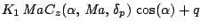
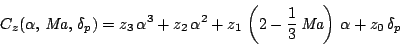
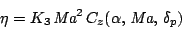
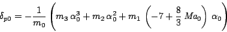

LFRT version 2.0: modelling a missile
This page considers a classical missile model. The continuum of linearized
models is derived in symbolic form and converted to LFR-form. The same script
can be used for modelling directly in LFR-form (only two lines must be modified).
The nonlinear modelUsing standard notations (α angle of attack, q pitch rate, Ma Mach number, δp tail plane deflection), the nonlinear longitudinal equation is


The input is δp. There are two measurements, the load factor (η) and the pitch rate (q)  The numerical values are defined here. Note that only α (denoted Al), q, Ma, δp (denoted dp) do not have a numerical value (other numerical values are initialized by invoking the script missiledata, this file is in the directory demo).
LFT representation of the continuum of linearized modelsIn the first part of this script we use the symbolic toolbox in order to compute linearized models. The LFRT toolbox can also be used in a similar way (the functions diff and eval exist also for LFR-objects). But using the symbolic toolbox permits us to take advantage of the structured tree decomposition for realization (symtreed). Using symtreed and then minlfr as proposed here, is often the most efficient approach to low order modelling. % Load numerical data missiledata % Define symbolic objects syms Al q Ma dp % Can be replaced by lfrs Al q Ma dp % Build differential equations Cz = z3*Al^3 + z2*Al^2 + z1*( 2 -(1/3)*Ma)*Al + z0*dp; Cm = m3*Al^3 + m2*Al^2 + m1*(-7 +(8/3)*Ma)*Al + m0*dp; A1 = q+K1*Ma*Cz*(1-Al^2/2);%+Al^4/24); A2 = K2*Ma^2*Cm; C1 = K3*Ma^2*Cz; F = [A1;A2;C1] % Differentiate for obtaining linearized models ABCD = [diff(F,'Al') diff(F,'q') diff(F,'dp')];
The equilibrium surfaceThe equilibrium surface is given by This form of dp is substituted into the state-space matrix by invoking the function eval.
% PLug equilibrium surface into ABCD
dp = -(m3*Al^3 + m2*Al^2 + m1*(-7 +(8/3)*Ma)*Al)/m0;
ABCD = eval(ABCD);
ABCD doesn't depend any more on dp.
RealizationAn LFR-realization of the system matrix ABCD is performed using the function symtreed (tree decomposition). Skip this step if "syms Al q Ma dp" was replaced by "lfrs Al q Ma dp" (first line of the script).
ABCD = symtreed(ABCD);
Input/output form, order reduction and normalizationThe corresponding input/output form is computed using abcd2lfr. The result is further reduced using minlfr. Finally, the parameter variations are normalized using the function normalizelfr (the angle of attack is assumed to vary in [0 0.24], and the Mach number in [2 4]).
% Input/output form sys = abcd2lfr(ABCD,2); % Order reduction after realization sys = minlfr(sys,1000*eps); % Normalisation sys = normalizelfr(sys,{'Al','Ma'},[0 2],[0.24 4]);With the symbolic approach (and symtreed) the order of the final system is 9, using the LFR approach, the order is 11.
|